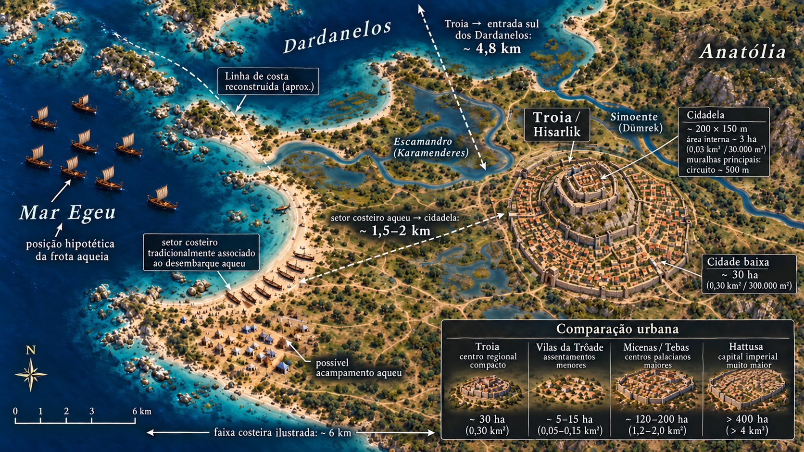

ARQUEOLOGIA
Uma cidade pequena no encontro de mundos
O sítio de Troia fica em Hisarlık, no noroeste da atual Turquia, a cerca de 4,8 km da entrada sul dos Dardanelos. Sua posição ligava o Egeu, a Anatólia, os Bálcãs e as rotas em direção ao mar Negro.
Troia possuía cidadela fortificada e uma cidade baixa. Ainda assim, era um centro compacto quando comparado às capitais e aos territórios dos grandes impérios da época. Sua fama mundial nasceu sobretudo da força duradoura da Ilíada e das tradições sobre a guerra, muito mais que de uma dimensão imperial.